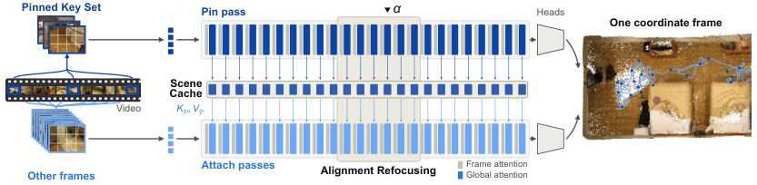
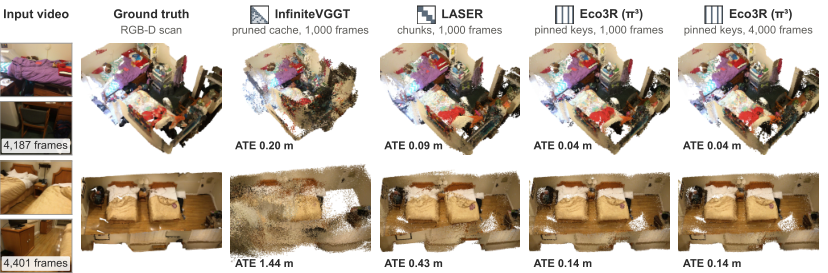

Problem Setup
01 · Why Long-Video Attention Becomes the Bottleneck
VGGT、π³ 这类 feed-forward multi-view transformer 可以在一次前向中估计相机和几何，但全局 cross-frame attention 的 token 数随视频帧数增长，显存和计算近似二次增长。简单切块又会丢掉远距离共视关系，导致长视频的姿态和点图质量下降。Eco3R 研究的是一个推理问题：能否把少量跨帧 key 固定下来，使其余帧独立读取，同时尽量保持原模型的预测。
论文的核心假设是，长视频的 keys 不一定要根据内容动态挑选；少量均匀分布的帧可能已经覆盖足够的全局几何。这个假设需要在相同 backbone、帧预算、成功判定和 GPU 上比较，而不是只比较理论 FLOPs。
Method
02 · Pinned Key Set and Exact Attach Pass
Eco3R 先选 31 个均匀分布的 pinned frames，进行 pin pass 并保存中间 tokens 到 Scene Cache；剩余帧在 attach pass 中只对这些 keys 做跨帧注意力，可以按任意 batch 顺序处理。这样每个 attach frame 的成本近似固定，缓存大小不随所有帧的 token 数一起增长。论文在理想的精确算术条件下证明，只要 camera head 处理方式一致，pin+attach 的 token 和预测与包含这些 keys 的 joint pass 相同。
若总帧数为 N、每帧 token 数为 T、pinned frames 为 M，完全注意力的项近似 N²T²，而共享 key 的跨帧项近似 NMT²；论文给出的 500 帧和 4,000 帧相对缩减约为 16× 与 129×。这不是把所有历史压缩成一个语义向量，而是保留一小组真实帧的中间表示作为空间锚点。
Mechanism
03 · Alignment Band, Online Stream, and Failure Score

Hongsen Cao et al. · Original figure, unmodified · CC BY 4.0 · Paper & Caption ↗
Figure 1 展示了从输入视频到 pinned cache、attach frames 和重建输出的路径。六个中间 global blocks 组成 alignment band，负责让远距离共视帧通过 pinned keys 对齐；其他 backbone 参数可以保持冻结。Online Stream 在录制过程中逐步更新 pinned frames，而不是等待完整视频后重新选择 keys。
Alignment Refocusing 只微调 alignment band：论文用 195 个训练 ScanNet 房间、24 个 pinned frames 和 24 个随机 attach frames，训练 camera 与 depth loss，2,000 个 AdamW steps、learning rate 10⁻⁵，耗时约 3.6 GPU hours。Alignment Score 是 pin pass 中 attention divergence 的 90th percentile；在 500 帧 VGGT 实验中，AUROC 为 0.91，用来在 attach 前标记可能失败的场景。
Training and Inference
04 · Training and Inference Protocol

Hongsen Cao et al. · Original figure, unmodified · CC BY 4.0 · Paper & Caption ↗
Eco3R 的基础 Pinned-Key Inference 是 training-free。Alignment Refocusing 是可选的轻量微调，训练时刻意模拟推理结构，让远距离帧只能通过 pinned keys 交互。实验使用 50 个 ScanNet 长视频场景，默认预算 500 和 1,000 帧，并增加 2,000 和 4,000 帧；成功定义为 ATE < 0.2 m。评测还包含 7-Scenes、NRGBD、TUM RGB-D、Replica 和 KITTI。
这一协议把三种因素分开：key 选择与 cache 结构、alignment band 是否 refocus、以及 backbone 本身。论文还测试加入邻近 keys 的影响：对 π³ 增加 4/8/16 个 batch 内邻近帧会使相对平移误差增加 14%/70%/230%，16 个额外 keys 时成功率从 94% 降到 78%，说明“更多 keys”不自动等于更好。
Evidence
05 · Main Results and Cost Evidence
在 500 帧 ScanNet 协议下，Eco3R(VGGT) 将 VGGT success rate 从 70% 提到 82%，ATE、相对平移误差和 accuracy error 分别下降约 19%、26% 和 25%；速度提升约 8.5×。Eco3R(π³) 保持完整 π³ 的成功率和轨迹准确度，在 500/1,000 帧速度分别提升 6.9×/13.8×。Eco3R(π³) 在 1,000 帧时只使用完整 π³ 约 7% 的能耗，并可在单张 A100 上处理到 4,000 帧。
这些结果测量的是长视频几何推理效率和稳定性，不是语义理解收益。相同的 pinned-key 结构也可能因为场景共视分布、相机运动或模型的中间层而失效；作者用失败 score 和 success rate 报告这一点。图 2 的定性比较应作为机制证据，不应替代完整的 ATE、RPE、Acc/Comp 和显存对照。
Discussion
06 · Relation to LingBot-Map and Semantic Memory
Eco3R 对 LingBot-Map 的直接启发是把长期几何证据组织成少量可复用的空间 anchors，并让当前帧读取这些 anchors，而不是让 cache 随帧数无界增长。若加入语义，可以把对象或区域的语义 token 与 pinned geometric tokens 对齐，让语义帮助判断哪些历史帧值得作为 key；但 key 选择仍需由几何覆盖、视角和置信度约束。
两者也有本质差别：Eco3R 的 cache 是少量真实帧的中间表示，按固定 key 读取；LingBot-Map 的 memory 是流式状态更新，可能需要写入、替换和长期维护。Eco3R 没有证明语义会改善重建，因此迁移实验必须比较相同 key 数和相同预算下的无语义、输出端语义和写入前语义三组，并同时报告几何精度与语义一致性。
Discussion
Reading Questions
Why do uniformly sampled keys work?
论文的经验假设是长视频的全局几何可由分布在时间轴上的少量帧覆盖；它不是所有视频都成立的定理，需由 success rate 和失败检测验证。
Is Eco3R a recurrent memory?
不是。它缓存 pinned frames 的中间 token，attach frames 读取它们；没有像 CUT3R 或 LingBot-Map 那样逐帧递归更新单一状态。
What is Alignment Refocusing learning?
它只微调中间 alignment band，使其在只能访问 pinned keys 的推理结构下恢复远距离帧对齐；基础 pin/attach 机制本身不需要训练。
What can transfer to semantic memory?
可以借鉴固定预算下的 anchor 选择、可复用读取和 failure score；语义是否改善几何仍需单独监督与消融。
References
First submitted 2026-11-13; read version v2 submitted 2026-11-16. Two original figures are reproduced under the paper's CC BY 4.0 license. Experimental results are reported by the authors and have not been independently reproduced.
Verified on 2026-11-19. Paper results refer to the linked versions. Repository references were checked on this date.